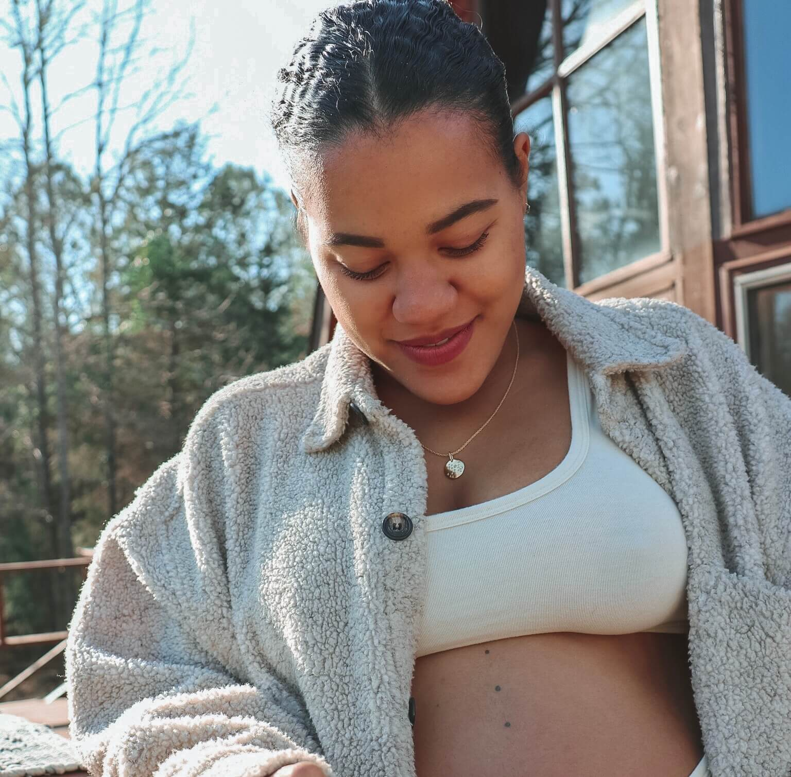

It all begins with an idea. Maybe you want to launch a business. Maybe you want to turn a hobby into something more.Or maybe you have a creative project to share with the world. Whatever it is, the way you tell your story online can make the difference.
Don't worry about sounding professional. Sound like you. There are over 15 billion websites out there, but your story is what's going to separate this one from the rest. If you read the words back and dont hear your own voice in your head, that's a good sign you still have more work to do. Be clear, be confident, don't overthink it. The beauty of your story is that it's going to continue to evolve and your site can evolve with it. Your goal should be to make it feel right for now. Later will take care of it's self, it always does.